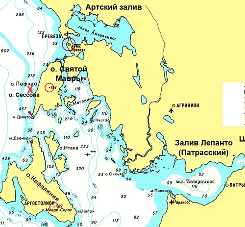

26 сентября 1538 года Андреа Дориа направил четыре своих галеры к турецкой эскадре, обозначая этим вызов на битву: такова была тогда традиция. Во главе отряда был поставлен родственник адмирала Джаннелтино Дориа. Барбаросса не остался в долгу. Шесть его галер с заваленными мачтами, что означало готовность к бою, пошли вдоль левого берега залива, заходя провокаторам в тыл. Джаннелтино тут же отреагировал. Он прижался к песчаному берегу с намерением пересечь дорогу противнику или отогнать его огнем своих пушек назад в залив. Спустя час еще шесть галер Барбароссы снялись с якоря и пошли в направлении галер противника. По сигналу Андреа Дориа на поддержку четырем христианским галерам двинулись четыре галеры мальтийских рыцарей и две галеры из папской эскадры, предлагая тем самым турецким галерам принять бой в равном составе.
Сначала показалось, что турки приняли вызов. Они подняли весла, открыли артиллерийский огонь и всеми своими действиями показали намерение защитить вход в пролив. Но потом вдруг отступили, и под градом ядер с галер Священной лиги убрались вглубь залива. Стало ясно, что Барбаросса заманивает христианские галеры в Артский залив. Расчет капудан-паши был понятен: тяжелые галеоны, основная ударная сила флота Лиги, через узкий и мелкий пролив пройти не смогут и турки, учитывая наличие у них мощной береговой артиллерии, получат огневое преимущество. Дориа на эту уловку турок не попался.
Христианские галеры предприняли еще несколько попыток выманить турок из их укрытия, но Барбаросса не проявил желания вступать в открытый бой. Впрочем, и Дориа не особенно стремился к сражению. Он отказался от предложенной его подчиненными высадки десанта на берега пролива, от штурма Превезы, чтобы обеспечить контроль над входом в залив и запереть турок в нем. Отказался он и от блокады турецкого флота, блокады, которая так хорошо была организована при взятии Голетты во время захвата Туниса три года назад.
Мы уже отмечали, что благоприятное время для ведения боевых действий на Средиземном море было упущено. В конце сентября в расчеты адмиралов непрошенным гостем входил генерал Непогода. Держать низкобортные легкие галеры в открытом море было рискованно. Нужно было искать укрытие. Дориа решил спуститься к острову Санта Мавра, пользуясь легким норд-остом. Кроме того, Дориа надеялся, что покинув позиции у входа в Артский залив он сможет спровоцировать турок на выход из укрытия.
…Раннее утро 28 сентября 1538 года.. Ветер – легкий ост-норд-ост.
Корабли объединенного флота за ночь, несмотря на неспокойное море, смогли пройти около тридцати миль и стали на якорь у маленького островка Сессола (Sèssola) к западу от острова Св. Мавры.

Утренний ост-норд-ост не позволил им обогнуть мыс Дукато и добраться до входа в залив Лепанто, как это планировал Дориа. Неожиданно дозорные суда сообщили, что флот Барбароссы ночью вышел из Артского залива и следует в их направлении, прижимаясь к берегу. Наблюдатели на верхушках рей галер Дориа заметили турецкий флот, который шел в безукоризненном порядке (in bellissima ordinanza). «Все паруса подняты и туго натянуты умеренным ост-норд-остом, реи положены на левый галс и выровнены, издалека флот был подобен белому орлу, расправившему свои крылья над лазурью моря.» (Guglielmotti, La Guerra dei Pirati e La Marina Pontificia dal 1500 al 1560. t. 2, p.49)
Голову этого белого орла составляли двадцать галер авангарда с выдававшимися вперед заостренными шпиронами, несущими на носу тяжелые орудия и расцвеченные множеством флагов. Затем шли несколько рядов разноцветных фуст под командованием Драгута, формируя своим строем шею османского орла. Тело орла, центр всего строя, занимали двадцать шесть галер Хайреддина Барбароссы, построенные в форме обтекаемого ромба, с развевающимся над кораблем капудан-паши в центре ордера ярко-красным знаменем Империи.
Правое крыло турецкого орла было составлено из двадцати четырех галер Салех-реиса, левое – из такого же числа галер, которыми командовал Табах-реис.
Распушенный орлиный хвост был составлен из множества бригантин и фуст пиратов Северной Африки, наемников, которых Барбаросса включил в состав своей армады.
Всего в состав ордера входили 94 галеры и 66 других кораблей и судов, что было ощутимо меньше флота Священной лиги.
С этого момента будем подробно отслеживать события, развернувшиеся у берегов острова Св. Мавры. Начнем в следующий раз.